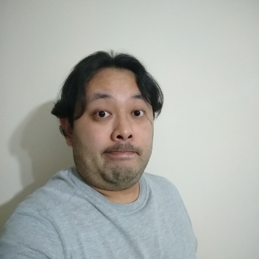

Flávio Takeshi Sugano

Sobre mim
Brasileiro, morando atualmente em São Paulo/SP. Estudante de Desenvolvimento de Software na Trybe
Habilidades
- Conhecimento de programação em: C, VBA, R, HTML
- Bons conhecimentos de Excel, PowerPoint
- Organização
- Raciocínio analítico
- Finanças e Planejamento financeiro
Recomendações